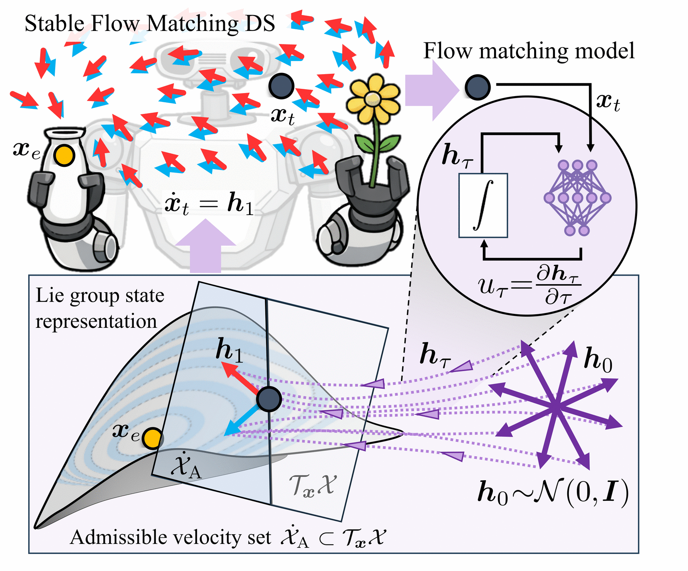

Multimodal dynamics
Dynamics on Lie groups
Multimodal dynamics on SE(3)
Dynamical system-based pose control on SE(3)
High-dimensional dynamics

Flow matching has recently emerged as a powerful approach for imitation learning, enabling scalable, expressive, and multimodal motion policies. However, when modeling these policies as dynamical systems, incorporating formal stability guarantees into these generative models is a prerequisite to ensure safe and generalizable robot behaviors, which remains a significant challenge. This paper introduces Stable Flow Matching Dynamical Systems (SFMDS), a novel framework that bridges the gap between highly-expressive generative modeling and formal stability guarantees. SFMDS parametrizes dynamical systems via flow matching while constraining the model to satisfy positive invariance and/or Lyapunov stability conditions. We propose two variants: a soft constraint based on a penalty term, and a hard structural constraint embedded directly into the model architecture. We further extend both formulations to Lie groups to robustly handle orientation trajectories. Experiments on benchmark datasets, in simulation, and on a humanoid robot show that SFMDS learns stable, scalable, and multimodal dynamical systems, enabling safe and expressive robot motion generation. SFMDS matches or outperforms state-of-the-art methods on unimodal datasets and substantially improves performance on multimodal datasets, where competing approaches fail to capture multimodality. Moreover, to the best of our knowledge, it is the first approach to scale latent Lyapunov-based stability concepts to high-dimensional systems such as reaction-diffusion dynamics.

Robot behavior modeled as a stable flow matching dynamical system (SFMDS) on a Lie group. Velocities $\dot{\bm{x}}_t=\bm{h}_1$ learned via flow matching. Asymptotic stability is enforced by constraining the solution space of flow matching to a set of admissible velocities $\dot{\sX}_{\text{A}}$ derived from a latent Lyapunov function. SFMDS generates multimodal behaviors, represented by blue and red arrows.